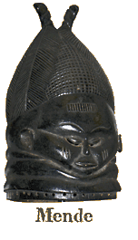
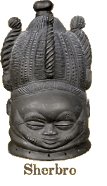
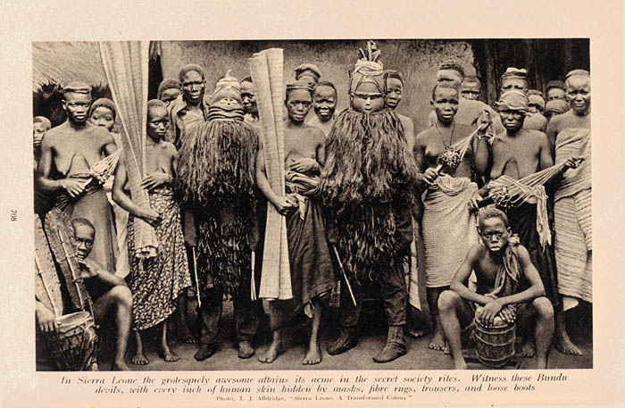
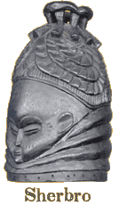

|
 Sande Society Sande (san’ day) is a traditional women’s society found in western Guinea, Sierra Leone, Liberia, and as far eastward as Côte d’Ivoire. Nearly all adult women of the Bassa, Bullom, Gola, Kissi, Kono, Kpelle, Limba, Loma, Mano, Mende, Sherbro, Susu, Temne, Vai, and Yalunka tribes are members of the society, with a membership of over 1½ million. Anthropologists believe that Sande originated in Gola society and spread to the neighboring Mende and Vai; other ethnic groups adopted Sande as recently as the last century. Sande is a secret society. Many of its practices and rituals are private to society members only. The initiation process starts when pubescent girls are separated from their families, removed to a dwelling outside of the villiage, and where older Sowei (soh-way) women perform clitoridectomies (FGM)[1] on the initiates. This procedure is considered necessary to the shaping of a proper Sande woman by removing a vestige of her maleness. (The corresponding male Poro society requires circumcision which likewise removes the remaining femaleness of a Poro man.) After the clitoridectomies, the initiates are secluded in the kpanguima. The young women then receive training ranging from nutrition, hygiene, sexuality, marriage and motherhood to traditional songs and dances. The young women who undergoes initiation into Sande society emerges as the embodiment of necessary values pertaining to womanhood. The structure of the Sande organization reinforces customary deference to older women in the society which provides support in a polygamous culture. The Sande provides unity of womanhood that sustains her in many ways throughout her life.  Sande Masquerades and its Bundu Masks (also: Bondo, Bundo) According to T.J. Alldridge (1901)[2], there are three levels in the Sande hierarchy. “Digbas, the lowest or first degree, Normeh, the Bundu devil or second degree, and Soweh [Sowei, Zoe], the headwoman, third degree.” Senior Sande officials perform masquerades wearing helmet masks with raffia fiber robes. Their entire costume, or mask, represents the spirit of Sowei, the guide of women, who resides in water. They perform during the initiation of young women into the society, at funerals, and at other important tribal events. “The Sande masker, the sowei (pl. soweisia, commonly referred to by the Sherbro term, bundu) is the most artistically elaborate of the Mende mask types.”[3] Some tribes, like the the Mende, dye the helmet masks black and highly polish them with palm oil. The shinny black helmet masks are said to represent the wet Sowei as she emerges from the depths. Today, shoe polish may replace the palm oil for polishing. Dark brown masks also exist. The helmet masks with their usually blackened raffia fiber collar,[4] along with blackened raffia fiber robes complete the intire mask (costume). Bundu masks are pierced around bottom rim so the raffia collar my be attached. The Sande’s use of the Bundu mask is the only documented mask in Africa worn by women. We have seen Bassa, Mende, Sherbro, and Vai versions of the masks. It is claimed that Bundu mask is absent among the Kpelle, Kono, Loma, and Mano. The Bundu helmet mask fits totally over the head of the masker; it depicts a stylized female head with an elaborate hairstyle and a tier of rolls or ripples. Although the traditional view is that the rolls represent a voluptuous, Rubenesque woman, a status symbol, the alternate view suggests the rolls represent concentric ripples in the water when the Sowei’s head surfaces from its sacred underwater home. The eyes are downcast or appear closed, with only small slits through which the masker sees. Generally, the style of the helmet masks remains constant, the details, and quality of workmanship can vary greatly. Some modern carvers produce exceptional helmet masks. Bundu masks that have passed the point of usefulness may have a second life as Gonde mask. Gonde is a comical female figure that occasionally appears together with the serious Sowei in the masquerades. The Gonde is the opposite in both appearance and behavior. Gonde masks which have been made from discarded Bundu masks are often redecorated with painted designs. 
Note the two Digbas with the mats, and three other with the seghuras (a.k.a. shekere).[5] “If the girl wishes she can simply become a Digba; she then has the great privilege of holding the mat before the devil at any function. She must not assume too much familiarity; she must remain medicinally at a respectful distance, the mat being between her and the devil. All large towns in Mendi have devils on hand ready to take up the cudgels against the mere man who may violate the stringent Bundu laws and interfere with the Bundu girls...The devil never talks, but gesticulates with the bunch of twigs; but whenever it is necessary to explain anything, it is a digba who does it. The considerable power of the devils allowed them, in conjunction with the chief of the village, to impose punishments and extract fines from miscreants.” Source: T.J. Alldridge, The Sherbo and its Hinterland, 1901, London: Macmillan and Company, pp.142-3.  Sande Today This fair use quote from Liberia (below) is an example of the pressures that Sande and traditional Africa are facing. “The Impacts of Logging Operations on Rural People: The livelihood of rural people, the overwhelming percentage of Liberians, is inextricably linked to the forest. They depend on the land and the forest for food, clean water, medicine and other forest products for survival. Their relationship with the forest is the cornerstone for their cultural and spiritual practices. For instance, in the Poro and Sande societies, traditional bush schools can only be conducted in very isolated highly-forested areas, where hunting and survival skills are taught. Traditional legal institutions, especially those involving elders and Zoes (elders who make up the supreme decision making body in rural communities) usually sit in the deep forest to hear cases of grave significance to the people. Because the forest is so central to their lives, the destruction of the forest will ultimately have severe consequences for future generations; a situation not lost on rural people themselves...”[6] Notes: 1. FGM, Female Genital Mutilation. Please see Inter-African Committee on Traditional Practices. 2. T.J. Alldridge wrote The Sherbo and its Hinterland, 1901, London: Macmillan and Company, and Transformed Colony: Sierra Leone as It Was, and as It Is; Its Progress, Peoples, Native Customs and Undeveloped Wealth, 1910, Philadelphia: Lippincott. Thomas Joshua Alldridge “...was for many years the Traveling Commissioner in the Upper Mendi Country as well as a District Commissioner.” 3. Ruth B. Phillips, Masking in Mende Sande Society Initiation Rituals, from Africa: Journal of the International African Institute, Vol. 48, No. 3 (1978), p. 265 4. A multi faced Bundu mask as photographed through of a window closed store in Carmel Valley, California, April, 2006. (Picard Trade Bead Museum and African Art Gallery) Seghura (Shekere) 5. “The national music of the [Mendi] women is the seghura, which is a small hollow gourd, having over it a loosely fitting mesh of country cotton strung with hard split seeds, the long loose ends of the cotton being gathered up over the bulbous end of the gourd and held in the left hand, the right hand holding the narrow neck. Upon the gourd being shaken and the thread alternately being slackened and tightened, the sound given out by the seeds striking upon the dry wooden casing is very considerable, but it can be modulated at the will of the performer, and is by no means inharmonious. At all native festivities, where women are present, the seghura is to be heard, and when three or four are being shaken together, the noise though loud is not harsh; it is very effective, and is greatly appreciated by the natives.” (T.J. Alldridge, The Sherbo and its Hinterland, 1901, page 122). 6. Kamara, Tom, The Forests of Evil, The New Democrat, Monrovia, Liberia, March 3, 2006. 

|
{kind=link}
{kind=link}
{kind=link}